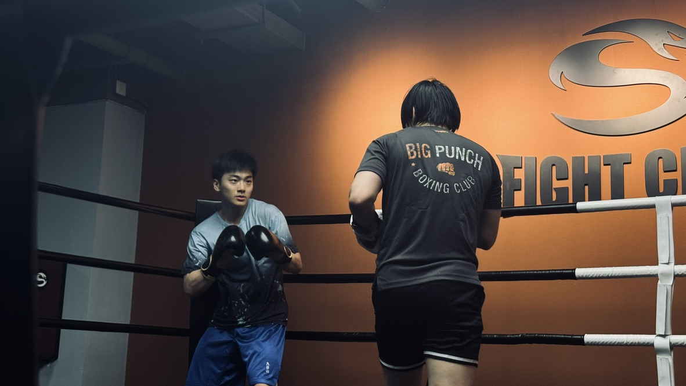
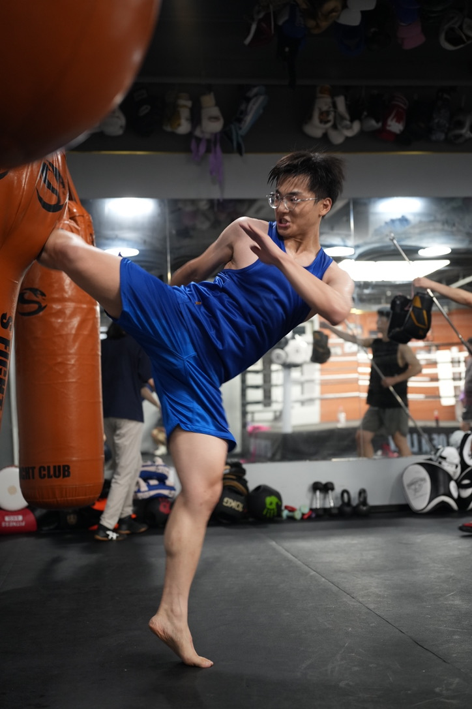
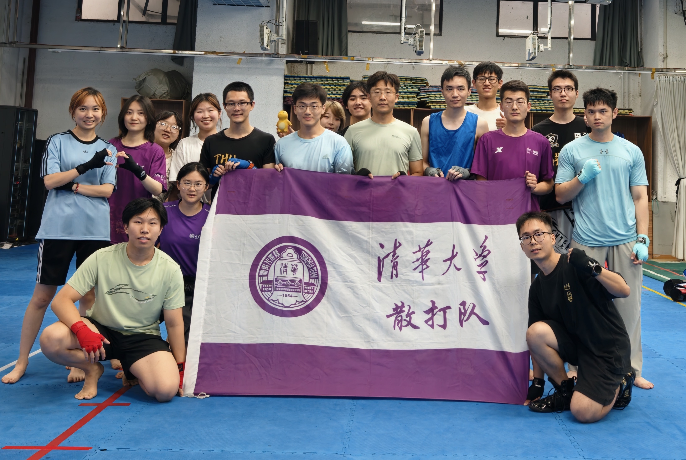

JUL 2026 — PRESENT
CURRENTDeepSeek
Researcher · Infra Team
RESEARCHER · DEEPSEEK INFRA TEAM
TSINGHUA UNIVERSITYPh.D. · Class of 2026
AI infra researcher at DeepSeek.
My research focuses on vector search systems, multimodal data formats for LLMs, and data planes for RL post-training.
I received my Ph.D. from the Institute for Interdisciplinary Information Science (IIIS), Tsinghua University, in June 2026, advised by Prof. Huanchen Zhang. Before joining Tsinghua, I obtained my B.S. at Yuanpei College of Peking University, advised by Prof. Tong Yang.
JUL 2026 — PRESENT
CURRENTResearcher · Infra Team
MAY 2026 — JUN 2026
Research Intern
Data infrastructure for world models.
MAR 2026 — JUN 2026
Informal Intern
Distributed KV cache.
JAN 2026 — APR 2026
Futures Strategy Researcher
JUN 2025 — SEP 2025
Beijing, ChinaQuantitative Researcher (HFT)
JAN 2025 — JUN 2025
Shenzhen, ChinaQuantitative Researcher (Factor)
In June 2026, the PM and the main investors decided to sue the founder after they found out that he was a total scammer.
STARTED AUG 2022 · SHANGHAI, CHINA
Research intern on Cost-Intelligent Data Analytics in the Cloud
JUL 2020 — SEP 2020 · BEIJING, CHINA
Research intern on Intelligent Traffic Prediction
2021 — JUN 2026
Ph.D. · Institute for Interdisciplinary Information Science (IIIS)
Advisor: Huanchen Zhang
Concurrent Data Structures, ML Systems, Cloud Databases
2022 — 2025
Minor in Economics · National School of Development
2017 — 2021
B.S. · Yuanpei College
Advisor: Tong Yang
Probabilistic Data Structures
Fast data structures and algorithms for storage, databases, and machine learning systems.
TECHNICAL REPORT SEPTEMBER 2026
arXiv:2609.19969
SIGMOD ’26 JUNE 2026
Proceedings of the ACM on Management of Data
SIGMOD ’25 JUNE 2025
Proceedings of the ACM on Management of Data
SIGMOD ’24 JUNE 2024
Proceedings of the ACM on Management of Data
SIGCOMM / FFSPIN 2022
ACM SIGCOMM Workshop on Formal Foundations and Security of Programmable network INfrastructures
IEEE TC 2022
Transactions on Computers
Outside the lab, I train in Sanda and boxing and serve as president of the Tsinghua University Sanda Club. I’ve earned bronze (70 kg) and silver (75 kg) at the Capital University Sanda Championships, and bronze in the 72 kg non-professional division at the National College Sanda Championships.



Selected training
& competition moments